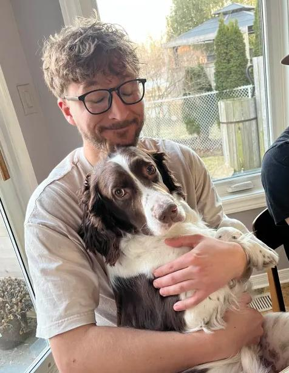

Weekly Log Book
Kyle Dick

Week 2
- Date: 05/15/2025
- Session Type: Debrief Meeting #1
- Prepare By: [KD]
1. Test Plan
- - CAN Message ID: 0x101 (From Arduino)
- - Floor Testing Targets 05,06,07
2. GUI Design Discussion
- - Basic Control: Up/Down buttons to select floor
- - Option: Separate GUI interface per floor
- - Extra Feature Proposal: Emergency Stop (E-STOP)
- - Responsive Design Required:
- - Buttons must be large and clearly visible
- - MUST Include:
- - Floor announcements (audio output)
- - Optional: Elevator music
3. HARDWARE / SOFTWARE INTEGRATION
- - Lockout of local push-buttons on Nucleo board
- - Fire alarm integration
- - Custom PCB planned
- - Design to prioritize user experience
4. EXTRA FEATURES (PROPOSED)
- - Voice Dictation (floor selection)
- - Floor announcement plays by default
- - Elevator music plays optionally (not automatic)
- - Randomized 5-second YouTube video (each run)
5. PRACTICE & DOCUMENTATION
- - Emphasize practicing software use and development
- - Each team member must maintain a separate logbook
Week 3
- Date: 05/15/2025
- Session Type: Weekly Progress
- Prepared By: [KD]
1. MEETINGS & DISCUSSIONS
- - Discussed project initiation strategy with Blaise and Amy.
- - Reviewed Project Plan with Alan.
- - Assigned responsibilities:
- - Alan: Complete the Test Plan.
- - Kyle: Complete the status report.
- - Kyle & Alan: Collaborate on programming main.cpp and updating STM32 filter IDs.
2. SOFTWARE DEVELOPMENT
- - Migrated ElevatorDemoLoop from Raspberry Pi to VS Code.
- - Simplified main.cpp to include only pcanRx and pcanTx loop logic.
- - Task assignments for deliverables:
- - Alan: Questions Q15–Q18.
- - Kyle: Questions Q19–Q21.
3. NEXT STEPS
- - Finalize Test Plan and status report.
- - Continue developing the elevator control loop in main.cpp.
- - Verify CAN filtering implementation on STM32.
- - Create GitHub Projects to keep track of tasks.